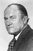

Country:United States, 155 minutes
Spoken languages:
Genres:Drama
Director(s):Tom Laughlin
Writer(s):Sidney Buchman, Tom Laughlin, Delores Taylor
Video Codec:Unknown
Number: 2154


Certification:
Storyline:
After a senator suddenly dies after completing (and sealing) an investigation into the nuclear power industry, the remaining senator and the state governor must decide on a person who will play along with their shady deals and not cause any problems. They decide on Billy Jack, currently sitting in prison after being sent to jail at the end of his previous film, as they don't expect him to be capable of much, and they think he will attract young voters to the party.
Cast: 


Medium: Original DVD,
Comments: Part of: Billy Jack DVD Collection
Loaned: No
Aspect ratio: Unknown